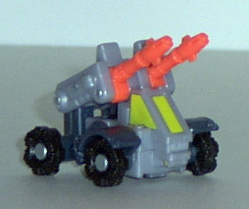
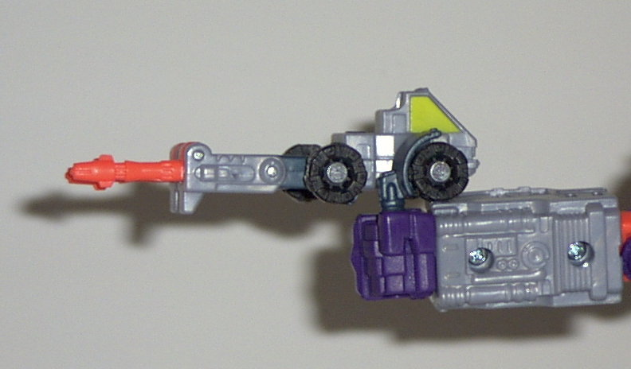
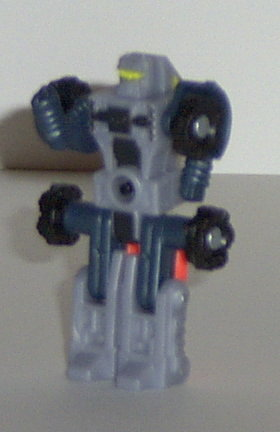
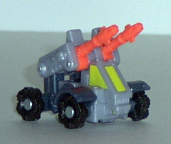
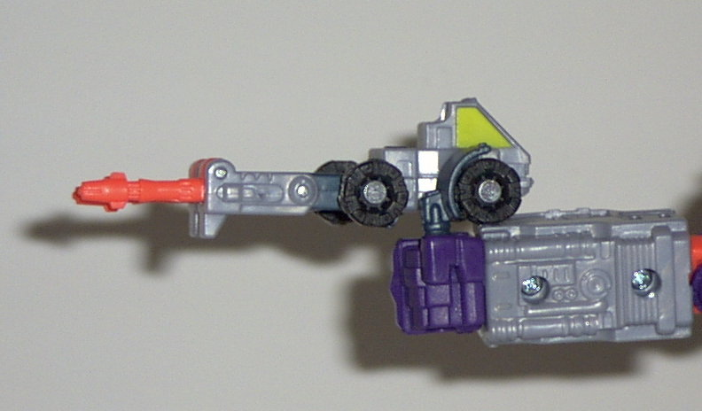
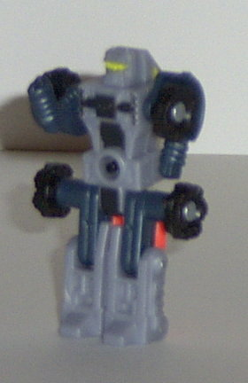
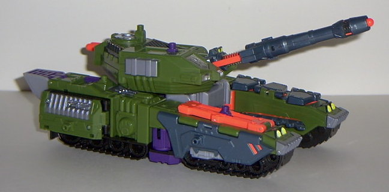
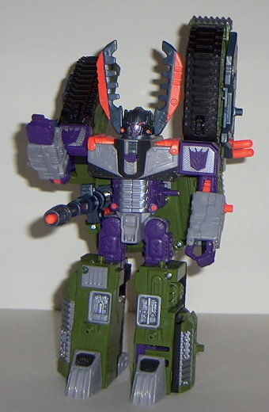
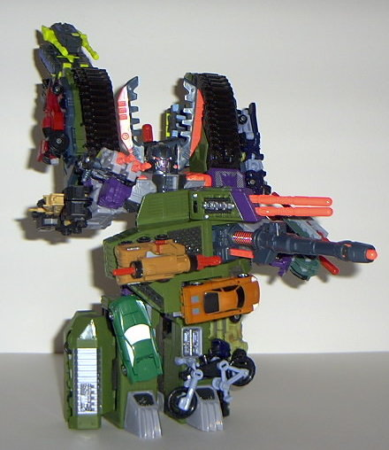

Leader-1
Leader-1
  
Allegiance : Minicon
Size : Mini-Con
Difficulty of Transformation : Very Easy
Color Scheme : Milky light gray, metallic dark blue-gray, black, neon orange, and some bright yellow
Rating : 6.4
Leader-1



Allegiance
: Minicon
Size
: Mini-Con
Difficulty of Transformation
: Very
Easy
Color Scheme
: Milky light gray,
metallic dark blue-gray, black, neon orange, and some bright yellow
Rating
: 6.4
Vehicle mode is a futuristic
mobile artillery truck. This mode is pretty good overall, and has nice
mold detailing- it could use more paint detailing, though, as the windows
are the only thing painted on Leader-1. As for extras- the only significant
ones are his robot arms, which are clearly visible on the back of his front
wheels. Bleh. Minicon port is on the central underside in this mode.
Leader-1 has a "gun
mode", in which you basically unfold his legs and stick his hand in a larger
robot's hand. Ta-dah. For a third mode, it's actually not that bad of a
gun mode, if a bit unoriginal. Although the windows integrate nicely into
the gun mode, though, the wheels stick out like a sore thumb.
Robot mode is nice,
if a bit unoriginal. Basically fold out his legs, fold the guns in, and
you're done. The paint detailing is better in this mode- the only part
that could've used a little more is his legs, but that's no big deal. What's
interesting is that Leader-1's face has the same colors and features of
the old Go-Bot Leader-1, from that knock-off Transformers line in the '80s.
Hasbro eventually bought the copyrights to the Go-Bots, though, and now
Leader-1 makes a reappearance as a Minicon. Why? "Because it was funny,"
a Hasbro rep said. Heheh. Anyway, the only big problem I have with this
mode is that the folded-up guns get in the way of knee movement almost
completely. Kind off a waste, having knee articulation if you can't move
them... Also, the arms are a bit piddly proportionally. As for articulation,
Leader-1 has shoulder, hip, and knee articulation. Nothing spectacular,
but nothing bad for such a little guy, either. The Minicon symbol is on
the center of his chest.
Leader-1 certainly isn't
bad, but he certainly isn't extraordinary, either. At least he can form
a gun, though...
 Megatron
Megatron



Allegiance
: Decepticon
Size
: Giga-Con
Difficulty of Transformation
: Medium
Color Scheme
: Dark military green,
milky light gray, neon orange, dark metallic blue-gray, purple, silver,
black, and some transparent plastic, light metallic purple, and bright
yellow
Powerlinx ports
: 14 (3 gimmicked)
Rating
: 9.0
Vehicle mode is a futuristic
tank. This mode is pretty nice-looking, with wonderful detailing everywhere-
both mold-wise and paint-wise. The silver highlights really help make this
mode look "meched-out". And, although I usually don't like neon colors
on Transformers, I think it looks rather nice on Megatron, in small amounts.
There are two things I don't like about this mode, though- for one, it's
not "solid" enough. Although the gap in the front can be explained by the
capture claws (even though the robot head is slightly apparent here...),
there's no reason for the gap in the back. So the tank mode has an "H"
shape, rather than a more solid square shape. Also, the robot feet and
heels stick out rather obviously from the back, not even trying to be disguised.
Although this mode still remains cool, it's obviously that this mode was
designed around the robot mode, and not visa versa. As for the gimmicks,
there's a ton of them:
- If you press the tank nozzle in some,
a missile will fire out of it, and a "firing" sound will emit from Megs,
and his transparent Decepticon insignia will flash.
- Attach a Minicon to the purple Powerlinx
port on the turret, then pull back on it and to the side. This will make
a missile-firing sound (in addition to lighting up the Decepticon insignia),
as well as spring up a missile launcher holding two missiles, which you
can fire individually.
- Attach a Minicon to the green Powerlinx
port on the rear of the turret, then push it left or right a little, and
a "machine-gun firing" machine will sound, and, of course, the Decepticon
symbol lights up.
- You can fold out a small ramp on the
right rear side of the tank, with a built-in "capture claw" for seizing
any Minicons dumb enough to wander up it. Probably one of Megatron's weakest
gimmicks, since there are very few Minicons that can actually FIT in the
chamber the capture claw drags them into (via a switch you push back or
forth)...
- You can fold out a ramp on the right
front top of the tank, with a Powerlinx port on each side. However, the
ramp doesn't really go anywhere...
- Press a switch on the left front top
of the tank, and three more static panels with Minicon ports flip out,
for even more Powerlinking goodness.
- You can pull out a huge metallic "chomper"
from the left back side of the tank, which can clamp and hold onto most
Minicons.
- If you turn the turret roughly 45 degrees,
you'll hear a helium-inhaling Megatron voice announce, "Decepticons, attack!",
followed by laser firing sounds and the light-up Decepticon symbol. However,
this gimmick is very annoying, as you can turn the turret much without
it activating, and it ALWAYS activates when you transform Megatron into
robot mode.
Yep, this guys definitely gimmick-filled,
even if some of them are rather weak.
Robot mode... KICKS!
MAN, this sucka looks cool. The huge tank-tread shoulders and turret poking
out next to Megatron's torso could be considered extras by some, but I
think they only enhance this mode and make him look all the more menacing.
The huge antlers on the side of the head take some initial getting used
to, as they're so different, but MAN, they sure look Megsy look nifty.
His face also looks eeevil, too. To make him look even more eeevil, push
up the tab on the center of his chest to push up a little "battle mask"
that envelops most of his face for heavy-duty fighting. You can also swing
his tank turret around to the front for an "attack" mode- it's a little
weak, granted, but it sure gives him enough firepower. As for the one gimmick
that couldn't be activated in tank mode- Attach a Minicon to the port on
his left arm (or not, it doesn't really matter) and slide it forward, to
reveal a little dagger that comes out of Megatron's palm. COOL! "Gonna
stab ya, Optimus!" I also like how his hands are asymmetrical- one's a
regular hand, while the other's a snap-shut claw-hand. Sah-weet! Of course,
the coolest thing about this mode has too be the INSANE amount of Minicons
you can powerlink to Megs. As if 14 Powerlinx points wasn't enough, you
can also put some in his capture claw or in his hands. Some people have
even gotten up to 25 Minicons on him at once! Cool! My only problem with
Megatron in this mode has to do with his legs. The upper legs are too small
when compared to the big bulky lower legs, and, to make matters worse-
he has no knee articulation! He only has side-to-side hip articulation
here, which is absolutely inexcusable on a toy this big. The rest of the
toy has good articulation, though- the head, waist, shoulders (at two points),
and right hand can all move easily. His Decepticon symbols on his shoulders
could use a better paint job, however... they're just solid purple...
Megatron says, "Buy
me now! Although my tank mode isn't very solid, my robot mode is the best
robot mode out of any Megatron EVER, and I have enough Minicon ports and
gimmicks to keep you busy for quite some time!" And, after all, who are
YOU to ignore the future conqueror of the galaxy?
Review by Beastbot